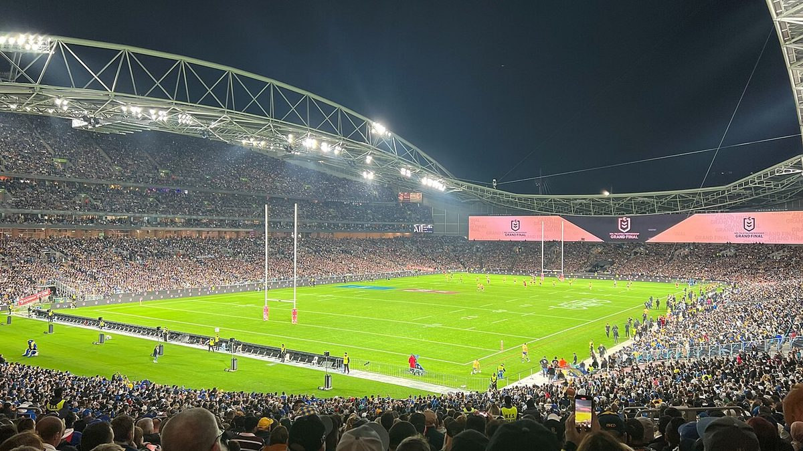

On This Day in 2005: Australia Ends 31-Year Wait to Qualify for World Cup
The Socceroos defeated Uruguay in a dramatic penalty shootout at Stadium Australia to reach the 2006 FIFA World Cup.

Breaking Decades of Qualification Heartbreak
On 16 November 2005, the Australia men's national soccer team ended a 31-year absence from the global stage by defeating Uruguay in a penalty shootout to qualify for the 2006 FIFA World Cup. Played in front of a massive crowd of 82,698 spectators at Stadium Australia, the second leg of the intercontinental playoff delivered the breakthrough the nation had chased for over three decades.
Australia entered the match facing a 1–0 deficit from the first leg played in Montevideo four days prior. Under the guidance of newly appointed coach Guus Hiddink—who took charge after Frank Farina stood down following a dismal showing at the 2005 FIFA Confederations Cup—the 49th-ranked Socceroos leveled the aggregate score. Mark Bresciano scored in the first half to put Australia 1–0 ahead on the night.

With the aggregate tied 1–1 after regulation time and two scoreless periods of extra time, the fixture proceeded to a penalty shootout. Australia won the shootout, sealing their first World Cup qualification since 1974.
A History of Near-Misses
Prior to the 2005 triumph in Sydney, Australia's sole appearance at a FIFA World Cup had occurred at the 1974 tournament in West Germany, where an amateur-heavy squad exited in the first round without scoring a goal. Over the subsequent four decades, the program suffered a series of agonizing qualification eliminations in intercontinental playoffs.
Before facing Uruguay, Australia had fallen short in playoffs against North Korea in 1966, Israel in 1970, Scotland in 1986, Argentina in 1994, Iran in 1998, and Uruguay four years earlier in the 2002 qualification campaign. The 2005 victory served as sweet revenge against the Sky Blues, whom Australia had previously beaten 1–0 in the semi-finals of the 1997 FIFA Confederations Cup before Uruguay gained the upper hand in the 2002 World Cup playoff.

Transition to the Asian Football Confederation
The historic night in Sydney unfolded during a period of massive structural change for Australian soccer. Earlier in 2005, Football Australia pursued a move away from the Oceania Football Confederation, hindered historically by Oceania's single qualification berth requiring an intercontinental playoff.
On 13 March 2005, the Asian Football Confederation executive committee made a unanimous decision to invite Australia to join the AFC. Following endorsement from Oceania and formal approval by FIFA on 30 June 2005, the switch took effect on 1 January 2006. The victory over Uruguay marked the final chapter of Australia's era competing as a member of Oceania, setting the stage for an unbroken run of World Cup qualifications from within Asia in subsequent years.